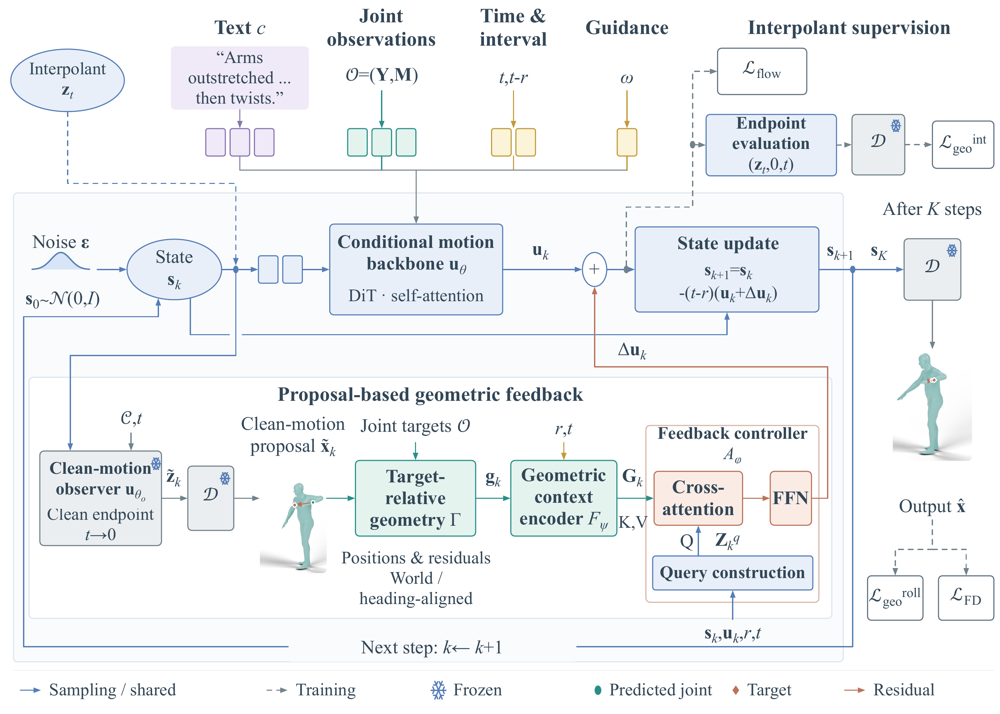

MoGeFi: Learning Geometric Feedback for Few-Step Human Motion Generation
Abstract
Interactive human motion generation calls for natural, text-aligned movement, accurate geometric control, and low latency. Precise control often relies on costly test-time refinement, while fast generators can leave substantial joint errors. We present MoGeFi, a directly trained framework that combines one- and few-step conditional motion generation with learned geometric feedback. The backbone learns finite-interval latent updates conditioned on text and optional joint-position constraints, without relying on a pretrained diffusion teacher. For controlled synthesis, proposal-based geometric feedback corrects the backbone's latent velocity using joint geometry estimated from the current state and refreshed at each sampling step. These corrections are learned through geometric and distributional supervision of the model's own short rollouts, enabling forward-only control without per-sample optimization. Extensive experiments on HumanML3D demonstrate that MoGeFi combines high motion quality, accurate geometric control, and interactive latency across multiple motion generation tasks. In sparse joint control, it achieves comparable FID and roughly halves trajectory and location error rates compared with MaskControl-Fast, while generating each sequence in approximately 61 ms. Ablations show that explicit geometric feedback and per-step proposal refresh improve constraint satisfaction. We also execute generated motions on a physical humanoid using an existing motion tracker.

Text-to-motion generation
Ours: 2 sampling steps. Real: dataset reference.
Sparse joint control
All methods receive the same control targets. Red timeline ticks mark the target frames.
Real-robot deployment
Human references, SONIC simulation, and physical Unitree G1 execution. Independently recorded sequences are aligned by action phase.